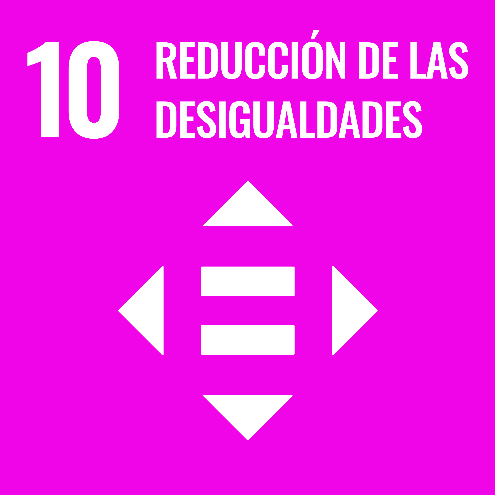

Centro de Bachillerato Tecnologico industrial y de servicios No. 150
Carlos Maria de Bustamante.

| Nombre | Objetivo | Descripcion | Metas |
|---|---|---|---|
| 9.Industria, innovacion e infraestructura | Las inversiones en infraestructura (transporte, riego, energía y tecnología de la información y las comunicaciones) son fundamentales para lograr el desarrollo sostenible y empoderar a las comunidades en numerosos países. Desde hace tiempo se reconoce que, para conseguir un incremento de la productividad y de los ingresos y mejoras en los resultados sanitarios y educativos, se necesitan inversiones en infraestructura. El ritmo de crecimiento y urbanización también está generando la necesidad de contar con nuevas inversiones en infraestructuras sostenibles que permitirán a las ciudades ser más resistentes al cambio climático e impulsar el crecimiento económico y la estabilidad social. Además de la financiación gubernamental y la asistencia oficial para el desarrollo, se está promoviendo la financiación del sector privado para los países que necesitan apoyo financiero, tecnológico y técnico | 9.1 Desarrollar infraestructuras fiables, sostenibles, resilientes y de calidad, incluidas infraestructuras regionales y transfronterizas, para apoyar el desarrollo económico y el bienestar humano, haciendo especial hincapié en el acceso asequible y equitativo para todos. 9.2 Promover una industrialización inclusiva y sostenible y, de aquí a 2030, aumentar significativamente la contribución de la industria al empleo y al producto interno bruto, de acuerdo con las circunstancias nacionales, y duplicar esa contribución en los países menos adelantados. 9.3 Aumentar el acceso de las pequeñas industrias y otras empresas, particularmente en los países en desarrollo, a los servicios financieros, incluidos créditos asequibles, y su integración en las cadenas de valor y los mercados. 9.4 De aquí a 2030, modernizar la infraestructura y reconvertir las industrias para que sean sostenibles, utilizando los recursos con mayor eficacia y promoviendo la adopción de tecnologías y procesos industriales limpios y ambientalmente racionales, y logrando que todos los países tomen medidas de acuerdo con sus capacidades respectivas. 9.5 Aumentar la investigación científica y mejorar la capacidad tecnológica de los sectores industriales de todos los países, en particular los países en desarrollo, entre otras cosas fomentando la innovación y aumentando considerablemente, de aquí a 2030, el número de personas que trabajan en investigación y desarrollo por millón de habitantes y los gastos de los sectores público y privado en investigación y desarrollo. 9.a Facilitar el desarrollo de infraestructuras sostenibles y resilientes en los países en desarrollo mediante un mayor apoyo financiero, tecnológico y técnico a los países africanos, los países menos adelantados, los países en desarrollo sin litoral y los pequeños Estados insulares en desarrollo. 9.b Apoyar el desarrollo de tecnologías, la investigación y la innovación nacionales en los países en desarrollo, incluso garantizando un entorno normativo propicio a la diversificación industrial y la adición de valor a los productos básicos, entre otras cosas. 9.c Aumentar significativamente el acceso a la tecnología de la información y las comunicaciones y esforzarse por proporcionar acceso universal y asequible a Internet en los países menos adelantados de aquí a 2020. |
|
|  | 10.Reduccion de las desigualdades | La comunidad internacional ha logrado grandes avances sacando a las personas de la pobreza. Las naciones más vulnerables —los países menos adelantados, los países en desarrollo sin litoral y los pequeños Estados insulares en desarrollo— continúan avanzando en el ámbito de la reducción de la pobreza. Sin embargo, siguen existiendo desigualdades y grandes disparidades en el acceso a los servicios sanitarios y educativos y a otros bienes productivos. Además, a pesar de que la desigualdad de los ingresos entre países ha podido reducirse, dentro de los propios países ha aumentado la desigualdad. Existe un consenso cada vez mayor de que el crecimiento económico no es suficiente para reducir la pobreza si este no es inclusivo ni tiene en cuenta las tres dimensiones del desarrollo sostenible: económica, social y ambiental. Con el fin de reducir la desigualdad, se ha recomendado la aplicación de políticas universales que presten también especial atención a las necesidades de las poblaciones desfavorecidas y marginadas. | 10.1 De aquí a 2030, lograr progresivamente y mantener el crecimiento de los ingresos del 40% más pobre de la población a una tasa superior a la media nacional. 10.2 De aquí a 2030, potenciar y promover la inclusión social, económica y política de todas las personas, independientemente de su edad, sexo, discapacidad, raza, etnia, origen, religión o situación económica u otra condición. 10.3 Garantizar la igualdad de oportunidades y reducir la desigualdad de resultados, incluso eliminando las leyes, políticas y prácticas discriminatorias y promoviendo legislaciones, políticas y medidas adecuadas a ese respecto. 10.4 Adoptar políticas, especialmente fiscales, salariales y de protección social, y lograr progresivamente una mayor igualdad. 10.5 Mejorar la reglamentación y vigilancia de las instituciones y los mercados financieros mundiales y fortalecer la aplicación de esos reglamentos. 10.6 Asegurar una mayor representación e intervención de los países en desarrollo en las decisiones adoptadas por las instituciones económicas y financieras internacionales para aumentar la eficacia, fiabilidad, rendición de cuentas y legitimidad de esas instituciones. 10.7 Facilitar la migración y la movilidad ordenadas, seguras, regulares y responsables de las personas, incluso mediante la aplicación de políticas migratorias planificadas y bien gestionadas. 10.a Aplicar el principio del trato especial y diferenciado para los países en desarrollo, en particular los países menos adelantados, de conformidad con los acuerdos de la Organización Mundial del Comercio. 10.b Fomentar la asistencia oficial para el desarrollo y las corrientes financieras, incluida la inversión extranjera directa, para los Estados con mayores necesidades, en particular los países menos adelantados, los países africanos, los pequeños Estados insulares en desarrollo y los países en desarrollo sin litoral, en consonancia con sus planes y programas nacionales. 10.c De aquí a 2030, reducir a menos del 3% los costos de transacción de las remesas de los migrantes y eliminar los corredores de remesas con un costo superior al 5%. |
 |
11.Ciudades y comunidades sostenibles | Las ciudades son hervideros de ideas, comercio, cultura, ciencia, productividad, desarrollo social y mucho más. En el mejor de los casos, las ciudades han permitido a las personas progresar social y económicamente. Ahora bien, son muchos los problemas que existen para mantener ciudades de manera que se sigan creando empleos y prosperidad sin ejercer presión sobre la tierra y los recursos. Los problemas comunes de las ciudades son la congestión, la falta de fondos para prestar servicios básicos, la escasez de vivienda adecuada y el deterioro de la infraestructura. Los problemas que enfrentan las ciudades se pueden vencer de manera que les permita seguir prosperando y creciendo, y al mismo tiempo aprovechar mejor los recursos y reducir la contaminación y la pobreza. El futuro que queremos incluye a ciudades de oportunidades, con acceso a servicios básicos, energía, vivienda, transporte y más facilidades para todos. | 11.1 De aquí a 2030, asegurar el acceso de todas las personas a viviendas y servicios básicos adecuados, seguros y asequibles y mejorar los barrios marginales. 11.2 De aquí a 2030, proporcionar acceso a sistemas de transporte seguros, asequibles, accesibles y sostenibles para todos y mejorar la seguridad vial, en particular mediante la ampliación del transporte público, prestando especial atención a las necesidades de las personas en situación de vulnerabilidad, las mujeres, los niños, las personas con discapacidad y las personas de edad. 11.3 De aquí a 2030, aumentar la urbanización inclusiva y sostenible y la capacidad para la planificación y la gestión participativas, integradas y sostenibles de los asentamientos humanos en todos los países. 11.4 Redoblar los esfuerzos para proteger y salvaguardar el patrimonio cultural y natural del mundo. 11.5 De aquí a 2030, reducir significativamente el número de muertes causadas por los desastres, incluidos los relacionados con el agua, y de personas afectadas por ellos, y reducir considerablemente las pérdidas económicas directas provocadas por los desastres en comparación con el producto interno bruto mundial, haciendo especial hincapié en la protección de los pobres y las personas en situaciones de vulnerabilida. 11.6 De aquí a 2030, reducir el impacto ambiental negativo per cápita de las ciudades, incluso prestando especial atención a la calidad del aire y la gestión de los desechos municipales y de otro tipo. 11.7 De aquí a 2030, proporcionar acceso universal a zonas verdes y espacios públicos seguros, inclusivos y accesibles, en particular para las mujeres y los niños, las personas de edad y las personas con discapacida. 11.a Apoyar los vínculos económicos, sociales y ambientales positivos entre las zonas urbanas, periurbanas y rurales fortaleciendo la planificación del desarrollo nacional y regional. 11.b De aquí a 2020, aumentar considerablemente el número de ciudades y asentamientos humanos que adoptan e implementan políticas y planes integrados para promover la inclusión, el uso eficiente de los recursos, la mitigación del cambio climático y la adaptación a él y la resiliencia ante los desastres, y desarrollar y poner en práctica, en consonancia con el Marco de Sendái para la Reducción del Riesgo de Desastres 2015-2030, la gestión integral de los riesgos de desastre a todos los niveles. 11.c Proporcionar apoyo a los países menos adelantados, incluso mediante asistencia financiera y técnica, para que puedan construir edificios sostenibles y resilientes utilizando materiales locales. |
 |
12.Produccion y consumo responsables | El consumo y la producción sostenibles consisten en fomentar el uso eficiente de los recursos y la eficiencia energética, infraestructuras sostenibles y facilitar el acceso a los servicios básicos, empleos ecológicos y decentes, y una mejor calidad de vida para todos. Su aplicación ayuda a lograr los planes generales de desarrollo, reducir los futuros costos económicos, ambientales y sociales, aumentar la competitividad económica y reducir la pobreza. El objetivo del consumo y la producción sostenibles es hacer más y mejores cosas con menos recursos, incrementando las ganancias netas de bienestar de las actividades económicas mediante la reducción de la utilización de los recursos, la degradación y la contaminación durante todo el ciclo de vida, logrando al mismo tiempo una mejor calidad de vida. En ese proceso participan distintos interesados, entre ellos empresas, consumidores, encargados de la formulación de políticas, investigadores, científicos, minoristas, medios de comunicación y organismos de cooperación para el desarrollo. También es necesario adoptar un enfoque sistémico y lograr la cooperación entre los participantes de la cadena de suministro, desde el productor hasta el consumidor final. Consiste en involucrar a los consumidores mediante la sensibilización y la educación sobre el consumo y los modos de vida sostenibles, facilitándoles información adecuada a través de normas y etiquetas, y participando en la contratación pública sostenible, entre otros | 12.1 Aplicar el Marco Decenal de Programas sobre Modalidades de Consumo y Producción Sostenibles, con la participación de todos los países y bajo el liderazgo de los países desarrollados, teniendo en cuenta el grado de desarrollo y las capacidades de los países en desarrollo. 12.2 De aquí a 2030, lograr la gestión sostenible y el uso eficiente de los recursos naturales. 12.3 De aquí a 2030, reducir a la mitad el desperdicio de alimentos per cápita mundial en la venta al por menor y a nivel de los consumidores y reducir las pérdidas de alimentos en las cadenas de producción y suministro, incluidas las pérdidas posteriores a la cosecha. 12.4 De aquí a 2020, lograr la gestión ecológicamente racional de los productos químicos y de todos los desechos a lo largo de su ciclo de vida, de conformidad con los marcos internacionales convenidos, y reducir significativamente su liberación a la atmósfera, el agua y el suelo a fin de minimizar sus efectos adversos en la salud humana y el medio ambiente. 12.5 De aquí a 2030, reducir considerablemente la generación de desechos mediante actividades de prevención, reducción, reciclado y reutilizació. 12.6 Alentar a las empresas, en especial las grandes empresas y las empresas transnacionales, a que adopten prácticas sostenibles e incorporen información sobre la sostenibilidad en su ciclo de presentación de informes. 12.7 Promover prácticas de adquisición pública que sean sostenibles, de conformidad con las políticas y prioridades nacionales. 12.8 De aquí a 2030, asegurar que las personas de todo el mundo tengan la información y los conocimientos pertinentes para el desarrollo sostenible y los estilos de vida en armonía con la naturaleza. 12.a Ayudar a los países en desarrollo a fortalecer su capacidad científica y tecnológica para avanzar hacia modalidades de consumo y producción más sostenibles. 12.b Elaborar y aplicar instrumentos para vigilar los efectos en el desarrollo sostenible, a fin de lograr un turismo sostenible que cree puestos de trabajo y promueva la cultura y los productos locales. 12.c Racionalizar los subsidios ineficientes a los combustibles fósiles que fomentan el consumo antieconómico eliminando las distorsiones del mercado, de acuerdo con las circunstancias nacionales, incluso mediante la reestructuración de los sistemas tributarios y la eliminación gradual de los subsidios perjudiciales, cuando existan, para reflejar su impacto ambiental, teniendo plenamente en cuenta las necesidades y condiciones específicas de los países en desarrollo y minimizando los posibles efectos adversos en su desarrollo, de manera que se proteja a los pobres y a las comunidades afectadas. |
 |
13.Accion por el clima | El cambio climático afecta a todos los países en todos los continentes. Tiene un impacto negativo en la economía nacional y en la vida de las personas, de las comunidades y de los países. En un futuro las consecuencias serán todavía peores. Las personas viven en su propia piel las consecuencias del cambio climático, que incluyen cambios en los patrones climáticos, el aumento del nivel del mar y los fenómenos meteorológicos más extremos. Las emisiones de gases de efecto invernadero causadas por las actividades humanas hacen que esta amenaza aumente. De hecho, las emisiones nunca habían sido tan altas. Si no actuamos, la temperatura media de la superficie del mundo podría aumentar unos 3 grados centígrados este siglo y en algunas zonas del planeta podría ser todavía peor. Las personas más pobres y vulnerables serán los más perjudicados. Tenemos a nuestro alcance soluciones viables para que los países puedan tener una actividad económica más sostenible y más respetuosa con el medio ambiente. El cambio de actitudes se acelera a medida que más personas están recurriendo a la energía renovable y a otras soluciones para reducir las emisiones. Pero el cambio climático es un reto global que no respeta las fronteras nacionales. Las emisiones en un punto del planeta afectan a otros lugares lejanos. Es un problema que requiere que la comunidad internacional trabaje de forma coordinada y precisa de la cooperación internacional para que los países en desarrollo avancen hacia una economía baja en carbono. En este sentido, los países adoptaron el Acuerdo de París7 1sobre cambio climático en diciembre de 2015. | 13.1 Fortalecer la resiliencia y la capacidad de adaptación a los riesgos relacionados con el clima y los desastres naturales en todos los paíse. 13.2 Incorporar medidas relativas al cambio climático en las políticas, estrategias y planes nacionales. 13.3 Mejorar la educación, la sensibilización y la capacidad humana e institucional respecto de la mitigación del cambio climático, la adaptación a él, la reducción de sus efectos y la alerta temprana. 13.a Cumplir el compromiso de los países desarrollados que son partes en la Convención Marco de las Naciones Unidas sobre el Cambio Climático de lograr para el año 2020 el objetivo de movilizar conjuntamente 100.000 millones de dólares anuales procedentes de todas las fuentes a fin de atender las necesidades de los países en desarrollo respecto de la adopción de medidas concretas de mitigación y la transparencia de su aplicación, y poner en pleno funcionamiento el Fondo Verde para el Clima capitalizándolo lo antes posible. 13.b Promover mecanismos para aumentar la capacidad para la planificación y gestión eficaces en relación con el cambio climático en los países menos adelantados y los pequeños Estados insulares en desarrollo, haciendo particular hincapié en las mujeres, los jóvenes y las comunidades locales y marginadas. |